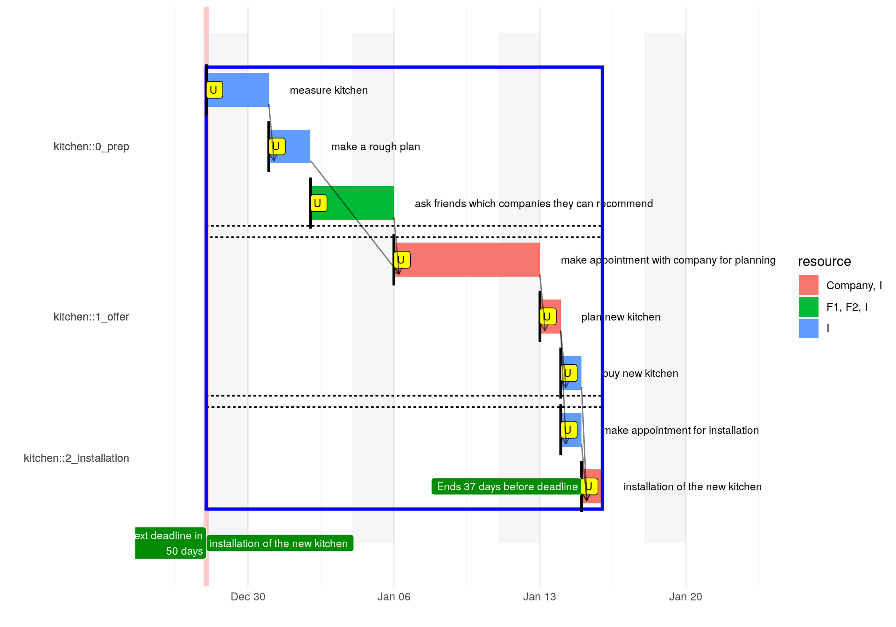
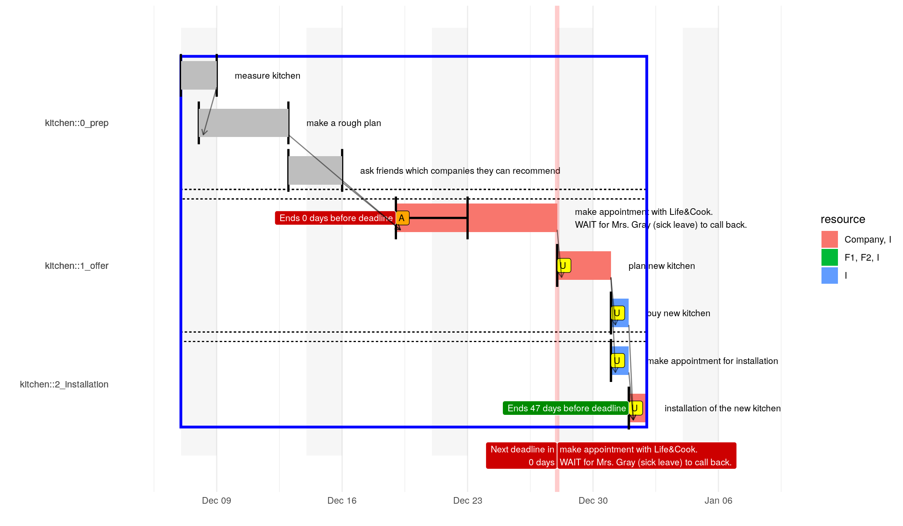
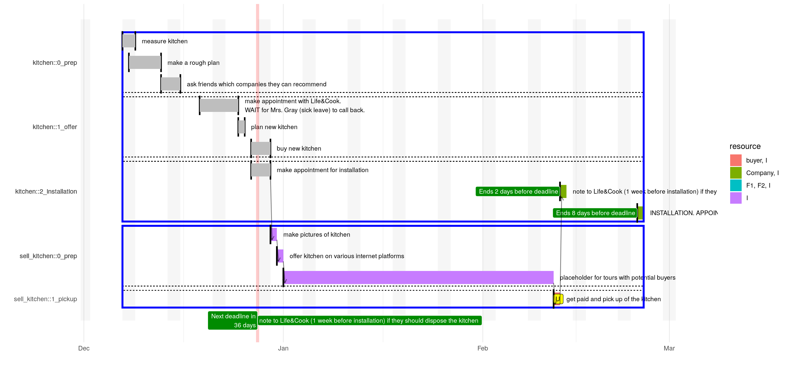

projectPlan_workflow.RmdFor this vignette we try to work through a simple project hopefully every can grasp, i.e. replace an old kitchen in a household with a new one.
We start with a simple list
It is easy to see that there are already some dependencies. For instance, no one will install our new kitchen if did not paid for it! Depending on how rough the plan is, we might need to measure the kitchen first. So we open up LibreOffice Calc enter every point in one row and save it as an xlsx-file. The usual workflow is to edit the plan for instance using LibreOffice Calc, import the plan with R and let R do the caclualtions.
The installed package provides an xlsx that already contains the structure that is necessary to start using the package. Executing the following line will show the location of the xlsx:
It contains the plan we roughly sketched at the beginning of this section.
raw_plan <- system.file("template","projects.xlsx", package = "projectPlan") %>%
projectPlan::import_xlsx()
DT::datatable(raw_plan)A few notes on the columns in the spreadsheet (more details later):
As you can see the xlsx also has three other columns that will not be used by the package but those columns are quite handy in practice:
projectPlan::import_xlsx will import ALL sheets and use the sheet name as the project name. The sheet name will be ignored if one has a column project.
Now we can easily calculate explicit timelines for the tasks
plan <- raw_plan %>%
projectPlan::wrangle_raw_plan()
timelines <- plan %>%
projectPlan::calculate_time_lines()
#> WARN -- 2019-12-08 16:18:56 -- projectPlan/h.exclude_weekends(earliest_start_time, end): start 2019-12-08 is on a weekend. Shift end 2019-12-09 by 1 day(s).
timelines %>%
dplyr::select(task, resource, time_start, time_end, dist_end_to_deadline) %>%
dplyr::arrange(time_start) %>%
DT::datatable()We can also easily visualize the timelines.

Let’s look at an updated version of the project plan:
This plan shows that we started 3 week ago and we updated the spreadsheet over the time. We already completed the first three tasks. But making a rough plan took us 4 days instead of the planned 2 days.
We already know that we want to contact the company Life&Cook but we were not able to call the company for a few days and therefore the project plan shows a gap between “ask friends …” and “make appointment …”. Furthermore, one of our friend told us that we should make the appointment with Mrs. Gray because he knows her personally and is convinced that she will make a fair offer. Unfortunately, we have to wait until she calls back because she currently is on sick leave, therefore this task has status AWAIT. Note, if the estimated end of the task is in the past but status is AWAIT, then end of the task is automatically set to today. We set the progress for the task “make appointment” to 50 to indicate the we already started the task. Instead of reformulate the task for the appointment one could simply add a comments column to the spreadsheet. Currently such a comments column is ignored by projectPlan. However, a deadline is automatically created for a task in status AWAIT, where the estimated end of the task (which is today if the estimated end is in the past) is used as the date for the deadline. Of course, an existing deadline will not be modified. The corresponding gantt-chart is:
raw_plan %>%
projectPlan::wrangle_raw_plan() %>%
projectPlan::calculate_time_lines() %>%
#tidyr::separate_rows(resource) %>%
projectPlan::gantt_by_sections(show_dependencies = TRUE)
#> WARN -- 2019-12-08 16:18:58 -- projectPlan/h.exclude_weekends(earliest_start_time, end): start 2019-12-08 is on a weekend. Shift end 2019-12-09 by 1 day(s).
Assume that we already planned our new kitchen with Mrs. Gray and we already have an appointment for the installation of the new kitchen on . Life&Cook can dispose the old kitchen for us but we would have to pay for that. So we try to sell the kitchen but at least one week before the installation Life&Cook need to know if they have to dispose the old kitchen for us. So the new plan is:
Note that row 8 has no explicit start or end date. It has only a deadline one week before installation and the dependency sell_kitchen::sell. The latter is a cross-project-dependency. We will create the project sell_kitchen in the next step.
In order to show a bit more of the package-functionality we create a new project for selling the old kitchen. The new project will be located in a separate spreadsheet with the name sell_kitchen and contains two sections. Note the first depends_on entry, i.e. kitchen::appointment_install, which again is a cross-project-dependency.
Importing the xlsx-file (every project in a separate sheet) will result in a raw plan containing all projects. Hence, we can easily calculate timeline taking all projects and there possible dependencies into account:
tmp_time_lines <- raw_plan %>%
dplyr::bind_rows(sell_kitchen) %>%
projectPlan::wrangle_raw_plan() %>%
projectPlan::calculate_time_lines()
tmp_time_lines %>%
projectPlan::gantt_by_sections(show_dependencies = TRUE)
The gantt-chart now easily reveals that if the project sell_kitchen goes as planned, then we can inform Life&Cook 3 days before we reach the last time when we can hire Life&Cook to dispose our kitchen.